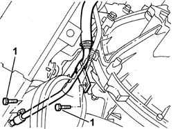
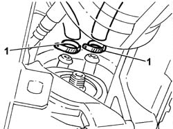
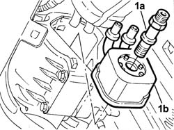
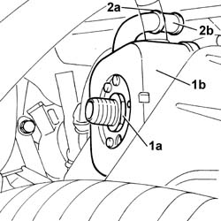
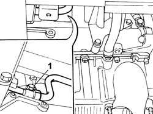

1084C10 Engine oil heat exchanger - R.R.
- Path
- Procedures > 10 ENGINE > 1084 ENGINE LUBRICATION > 1084C ENGINE OIL COOLING CIRCUIT > 1084C10 Engine oil heat exchanger - R.R.
- Kind
- repair procedure (removal / refitting; the operation number is the code)
- Applies to
- engines: 2.0 TB, 2.4 20V, 3.0 V6, 3.2 V6; all production periods
- Interactive page
- https://sloeber94.github.io/elrnDB-lThss/en/#/95329
Applies to: engines: 2.4 20V; all production periods
 Removing
Removing
 Refitting
Refitting- Position the vehicle on a lift.
- Open the boot, remove the cover on the left hand side and disconnect the negative battery lead.
See in Op. 7055B54 PROTECTION/GUARD under engine - R.R.
See in Op. 1084B30 CARTRIDGE ENGINE OIL FILTER -R.R.
1. Undo the bolts fixing the coolant pipe mounting brackets to the crankcase.

Applies to: engines: 2.4 20V; all production periods
1. Loosen the bands and disconnect the heat exchanger coolant supply and return pipes.

Applies to: engines: 2.4 20V; all production periods
1. Undo the connector (1a) and remove the engine oil heat exchanger (1b).

Applies to: engines: 2.4 20V; all production periods
Refitting
Removing- Position the engine oil heat exchanger and secure it using the connector.
- Connect the coolant supply and return pipes to the heat exchanger and secure them using the bands.
- Tighten the bolts fixing the coolant mounting brackets to the crankcase.
See in Op. 1084B30 CARTRIDGE ENGINE OIL FILTER -R.R.
- [0010T11]
See in Op. 0010T21 ENGINE COOLANT - Check density and top up if necessary
-
See in Op. 7055B54 PROTECTION/GUARD under engine - R.R.
- Connect the negative battery lead.
- Remove the vehicle from the lift.
Applies to: engines: 3.0 V6, 3.2 V6; all production periods
Removing
Refitting- Position the vehicle on a lift.
- Open the boot, remove the cover on the left hand side and disconnect the negative battery lead.
See in Op. 4450B04 Right FRONT WHEEL (one) - R.R.
- Raise the vehicle on the lift.
See in Op. 7055B64 Engine compartment DUST SEAL in front wheel arch (one), left or right - R.R.
See in Op. 7055B42 FRONT WHEEL ARCH LINER (one), left or right - R.R.
See in Op. 1092G10 Engine components single drive BELT - R.R.
See in Op. 7040D50 ENGINE COMPARTMENT UPPER SOUND INSULATION SHIELD - R.R.
See in Op. 1048A21 AIR INLET HOSE FROM INTAKE TO FILTER - R.R.
See in Op. 1048A28 vacuum air circuit resonator pipe - r+r
See in Op. 1008C10 Power unit REACTION ROD - Replace
See in Op. 1048A11 COMPLETE AIR FILTER -R.R.
See in Op. 1072B50 Air CHAMBER - R.R.
See in Op. 2710A31 INTERMEDIATE DRIVE SHAFT - R.R.
See in Op. 1076B84 EXHAUST PIPE BETWEEN RIGHT PRECONVERTER AND CATALYTIC CONVERTER - R.R.
See in Op. 1084B30 CARTRIDGE ENGINE OIL FILTER -R.R.
See in Op. 1076B84 EXHAUST PIPE BETWEEN RIGHT PRECONVERTER AND CATALYTIC CONVERTER - R.R.
See in Op. 1080B39 RIGHT CATALYTIC PRECONVERTER - R.R. or Replace Gasket
See in Op. 1076B84 EXHAUST PIPE BETWEEN RIGHT PRECONVERTER AND CATALYTIC CONVERTER - R.R.
See in Op. 5530A10 ALTERNATOR - R.R.
1. Undo the connector (1a) in the centre of the heat exchanger (1b).
2. Open the band (2a) retaining the pipe (2b) between the crankcase and the heat exchanger, then remove the heat exchanger.

Applies to: engines: 3.0 V6, 3.2 V6; all production periods
Refitting
Removing- Position the engine oil heat exchanger and fit the connecting pipe on the crankcase.
- Tighten the filter feeder duct, then tighten the hexagonal nut to the recommended torque.
 | Value - daNm | Fastening | Component | Ø |
|---|---|---|---|---|
. | 3 | Connector | ENGINE OIL HEAT EXCHANGER | M18 X 1,5 |
- Close the band retaining the connecting pipe to the crankcase.
See in Op. 5530A10 ALTERNATOR - R.R.
See in Op. 1076B84 EXHAUST PIPE BETWEEN RIGHT PRECONVERTER AND CATALYTIC CONVERTER - R.R.
See in Op. 1080B39 RIGHT CATALYTIC PRECONVERTER - R.R. or Replace Gasket
See in Op. 1076B84 EXHAUST PIPE BETWEEN RIGHT PRECONVERTER AND CATALYTIC CONVERTER - R.R.
See in Op. 2710A31 INTERMEDIATE DRIVE SHAFT - R.R.
See in Op. 1072B50 Air CHAMBER - R.R.
See in Op. 1048A11 COMPLETE AIR FILTER -R.R.
See in Op. 1008C10 Power unit REACTION ROD - Replace
See in Op. 1048A28 vacuum air circuit resonator pipe - r+r
See in Op. 1048A21 AIR INLET HOSE FROM INTAKE TO FILTER - R.R.
See in Op. 7040D50 ENGINE COMPARTMENT UPPER SOUND INSULATION SHIELD - R.R.
See in Op. 1092G10 Engine components single drive BELT - R.R.
See in Op. 7055B42 FRONT WHEEL ARCH LINER (one), left or right - R.R.
See in Op. 7055B64 Engine compartment DUST SEAL in front wheel arch (one), left or right - R.R.
See in Op. 4450B04 Right FRONT WHEEL (one) - R.R.
- [0010T11]
- [0010T21]
- Connect the negative battery lead, then close the boot.
- Remove the vehicle from the lift.
Applies to: engines: 2.0 TB; all production periods
Removing
Refitting- Position the vehicle on a lift.
- Make sure that the ignition key is in the OFF position, then open the boot, remove the cover on the left hand side and disconnect the negative battery lead.
See in Op. 7040D50 ENGINE COMPARTMENT UPPER SOUND INSULATION SHIELD - R.R.
See in Op. 7055B54 PROTECTION/GUARD under engine - R.R.
See in Op. 1048A21 AIR INLET HOSE FROM INTAKE TO FILTER - R.R.
See in Op. 1048A50 air inlet pipe to turbocharger - r + r
See in Op. 1048A10 COMPLETE AIR FILTER -R.R.
See in Op. 1088E10 Radiator cooling FAN - R.R.
See in Op. 1072C44 Exhaust manifold heat shield on BULKHEAD - R.R.
See in Op. 1080B40 CATALYTIC PRECONVERTER - R.R.
See in Op. 1016A40 Ignition COIL COVER on cylinder head - R.R.
See in Op. 1084B30 CARTRIDGE ENGINE OIL FILTER -R.R.
1. Undo the bolt fixing the coolant pipe mounting bracket to the crankcase.

Applies to: engines: 2.0 TB; all production periods
1. Loosen the bands and disconnect the heat exchanger coolant supply and return pipes.
Applies to: engines: 2.0 TB; all production periods
1. Undo the connector (1a) and remove the engine oil heat exchanger (1b).
Applies to: engines: 2.0 TB; all production periods
Refitting
Removing- Position the engine oil heat exchanger and secure it using the connector.
- Connect the coolant supply and return pipes to the heat exchanger and secure them using the bands.
- Tighten the bolt fixing the coolant pipe mounting bracket to the crankcase.
See in Op. 1084B30 CARTRIDGE ENGINE OIL FILTER -R.R.
See in Op. 1016A40 Ignition COIL COVER on cylinder head - R.R.
See in Op. 1080B40 CATALYTIC PRECONVERTER - R.R.
See in Op. 1072C44 Exhaust manifold heat shield on BULKHEAD - R.R.
See in Op. 1088E10 Radiator cooling FAN - R.R.
See in Op. 1048A10 COMPLETE AIR FILTER -R.R.
See in Op. 1048A50 air inlet pipe to turbocharger - r + r
See in Op. 1048A21 AIR INLET HOSE FROM INTAKE TO FILTER - R.R.
See in Op. 0010T11 ENGINE OIL - Check level and top up if necessary
See in Op. 0010T21 ENGINE COOLANT - Check density and top up if necessary
See in Op. 7055B54 PROTECTION/GUARD under engine - R.R.
See in Op. 7040D50 ENGINE COMPARTMENT UPPER SOUND INSULATION SHIELD - R.R.
- Connect the negative battery lead.
- Remove the vehicle from the lift.
Topics linked from this page (24)
- 0010T11 ENGINE OIL - Check level and top up if necessary
- 0010T21 ENGINE COOLANT - Check density and top up if necessary
- 1008C10 Power unit REACTION ROD - Replace
- 1016A40 Ignition COIL COVER on cylinder head - R.R.
- 1048A10 COMPLETE AIR FILTER -R.R.
- 1048A11 COMPLETE AIR FILTER -R.R.
- 1048A21 AIR INLET HOSE FROM INTAKE TO FILTER - R.R.
- 1048A28 vacuum air circuit resonator pipe - r+r
- 1048A50 air inlet pipe to turbocharger - r + r
- 1072B50 Air CHAMBER - R.R.
- 1072C44 Exhaust manifold heat shield on BULKHEAD - R.R.
- 1076B84 EXHAUST PIPE BETWEEN RIGHT PRECONVERTER AND CATALYTIC CONVERTER - R.R.
- 1080B39 RIGHT CATALYTIC PRECONVERTER - R.R. or Replace Gasket
- 1080B40 CATALYTIC PRECONVERTER - R.R.
- 1084B30 CARTRIDGE ENGINE OIL FILTER -R.R.
- 1088E10 Radiator cooling FAN - R.R.
- 1092G10 Engine components single drive BELT - R.R.
- 2710A31 INTERMEDIATE DRIVE SHAFT - R.R.
- 4450B04 Right FRONT WHEEL (one) - R.R.
- 5530A10 ALTERNATOR - R.R.
- 7040D50 ENGINE COMPARTMENT UPPER SOUND INSULATION SHIELD - R.R.
- 7055B42 FRONT WHEEL ARCH LINER (one), left or right - R.R.
- 7055B54 PROTECTION/GUARD under engine - R.R.
- 7055B64 Engine compartment DUST SEAL in front wheel arch (one), left or right - R.R.